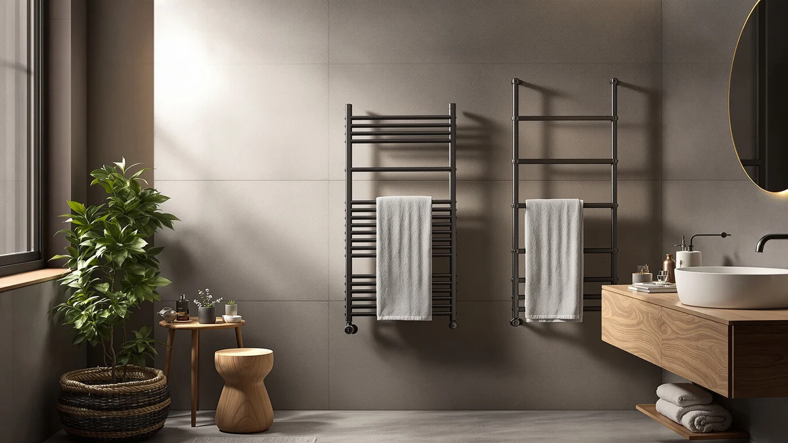

Best Towel Warmer With Fragrance of 2026: 7 Top Picks
Prices and picks verified as of August 2026. Independent, reader-supported reviews.


Quick Answer
The best towel warmer with fragrance for most people is the Keenray 18L stainless steel bucket, $72.98 on Amazon as of July 2026. Drop a scent disc under the lid, load a bath towel, and it comes out warm and lightly perfumed in one cycle. If you warm oversized bath sheets instead, the SereneLife Luxury Rectangle ($99.99) gives you a wider opening for $27 more.
Our pick: Keenray Towel Warmer for Bathroom, $72.98 Check Price on Amazon
Bottom line: our top pick is the Keenray Towel Warmer for Bathroom at $72.98. The best budget option is the Demissle Replacement Fragrance Disc Towel Warmer Bucket at $12.99.
Things to Know Before You Buy
- Bucket warmers own this category. A closed lid traps heat and scent together, which makes lidded buckets the only real towel warmers with fragrance. All seven picks in this guide sit on a floor or counter and plug into a standard outlet.
- The fragrance comes from a disc, not the machine. You place a solid scent disc inside the bucket, and the heat releases the fragrance into the towel. Replacement discs, like the Demissle pack at $13.99, keep the scented cycles going.
- Stainless steel matters here. Fragrance oils leave residue over time, and a stainless interior wipes clean instead of holding onto the smell of last month's disc. Each of our picks uses stainless steel.
- Budget $72.98 to $99.99 for the warmer itself. That range covers the six machines in this guide as of July 2026, and the price gap buys shape and app control rather than more heat.
- Plan around one towel per cycle. A bucket in this size range warms one large bath towel or two hand towels at a time, so a family needs to stagger showers or run back-to-back cycles.
The best towel warmer with fragrance we recommend is the Keenray 18L bucket, which costs $72.98 on Amazon as of July 2026 and turns an ordinary bath towel into the warm, faintly scented one a good spa hands you after a massage. A towel warmer alone fixes the cold-bathroom problem. Adding a scent disc under the lid fixes the other half, the towel that smells like the laundry basket it came from.
We compared seven scent-ready products for this guide: five bucket and rectangle warmers from Keenray and SereneLife, the fragrance-focused Di’Aroma bucket from Mystic Romance, and a $13.99 pack of Demissle replacement discs that keeps any of them perfumed. We weighed capacity, interior material, footprint, and price against what owners report after months of use, and we gave extra credit to designs that seal in scent rather than letting it drift out around the lid.
The Keenray won on the balance of size and cost, but it is not the only sensible buy here. The SereneLife Luxury Rectangle ($99.99) suits bath-sheet households, the SereneLife Counter bucket ($74.99) squeezes onto a crowded vanity, and the SereneLife WIFI model ($88.99) starts a cycle from your phone before you get out of bed. Wall-mounted racks, the default towel warmer in many bathrooms, sit this category out entirely because an open bar has nowhere to hold a scent disc.
Why You Should Trust Us
I run Best Towel Warmers, and I have spent the past year comparing bucket warmers, heated racks, and towel drawers for this site, from $50 plug-ins to hardwired luxury units. For each guide I pull the manufacturer spec sheets, measure claims against the towel sizes people own, and read owner reviews for the complaints that repeat across months rather than the one-off horror stories.
No brand paid for a spot in this guide, and none saw it before publication. The affiliate links fund the site through a small commission, and that commission stays the same whichever towel warmer with fragrance you pick, so we have no reason to steer you toward one model over another.
How We Picked
To find the best towel warmer with fragrance, we started from one hard requirement: the design has to hold a scent disc and keep the fragrance in with the towel. That rules out open racks and bars immediately and narrows the field to lidded bucket and rectangle-style warmers.
From there we filtered on four criteria. Stainless steel construction, because painted or plastic interiors hold onto fragrance oil residue. A capacity that takes at least one full-size bath towel, since a warmer that only fits hand towels solves half the problem. A price under $100, which covers this whole category without stepping into luxury drawer territory. And a 4-star owner rating floor, because a warmer that dies in month three is expensive at any price. Six warmers and one disc refill pack cleared all four bars.
How We Compared
We evaluate towel warmers with fragrance the same way we handle the rest of the site: verify the spec sheet, then check it against the real world. For each pick we confirmed the listed material and dimensions, checked the stated capacity against a standard 30-by-56-inch bath towel, and compared warm-up expectations across the six machines rather than trusting any single brand's claim.
We then read owner feedback with three questions in mind. Does the lid seal well enough that the scent ends up in the towel instead of the room? Does the unit shut off on its own reliably? And does the fragrance holder take standard discs like the Demissle refills, or does it lock you into one brand? Products that failed any of those checks in a repeated pattern lost their spot before we wrote a word about them.
Our Picks

Keenray Towel Warmer for Bathroom
What we like
- 18-liter stainless steel bucket takes a full-size bath towel with room to spare
- Lowest-priced full-size warmer here at $72.98, $27 under the SereneLife Luxury Rectangle
- Lidded design traps heat and scent together for a stronger fragrance payoff
Flaws but not dealbreakers
- Warms one large towel per cycle, so families run it back to back
- Claims permanent floor or counter space, unlike a wall-mounted rack
- Scent discs cost extra, around $13.99 per Demissle refill pack
| Material | Stainless steel |
| Size | 18L |
The Keenray is the towel warmer with fragrance we would buy first, and the reason is unglamorous: it does the whole job at the lowest full-size price in the category. The 18-liter stainless steel bucket swallows a standard bath towel without the tight rolling smaller buckets demand, the lid keeps the heat and the scent where the towel is, and at $72.98 on Amazon as of July 2026 it undercuts the two $99.99 options here by $27 while matching their 4-star owner rating.
The flaws are the flaws of the format rather than this unit. One towel per cycle means a two-shower household either staggers bathroom time or runs the Keenray twice. It also claims a patch of floor or counter permanently, which the small-bathroom crowd should weigh against the SereneLife Counter model below. And the fragrance is bring-your-own: budget another $13.99 for a disc refill pack, because the scented part of a scented towel warmer lives in the disc, not the machine.

SereneLife Luxury Rectangle Towel Warmer
What we like
- Rectangular shape takes a folded bath sheet more easily than round buckets
- Stainless steel interior wipes clean after months of fragrance discs
- Same 4-star owner rating as our top pick
Flaws but not dealbreakers
- At $99.99 it ties the Di’Aroma as the most expensive warmer in this guide
- Costs $27 more than the Keenray without warming more towels per cycle
| Material | Stainless steel |
| Size | Rectangle |
SereneLife builds most of the field in this category, and the Luxury Rectangle is its strongest case for spending more on a towel warmer with fragrance. The rectangular body is the draw: a folded bath sheet slides in flat instead of rolling into a cylinder, which matters if your linen closet leans toward the oversized. The stainless steel construction matches the rest of our picks, and owners rate it 4 stars, level with the Keenray.
The price is the argument against it. At $99.99 on Amazon as of July 2026, you pay $27 over the Keenray for a shape change, not for extra capacity or features, and the SereneLife WIFI model adds app control for $11 less. Buy the Luxury Rectangle when the bath-sheet fit is the point. If you fold standard towels, the Keenray does the same work for less money.

SereneLife Counter Towel Warmer Bucket
What we like
- 10.4 by 12 by 13 inch footprint fits on a crowded vanity
- $74.99 price lands within $2 of our top pick
- Stainless steel body like the larger buckets
Flaws but not dealbreakers
- Smaller interior means tighter rolling and no room for bath sheets
- Round opening takes one towel at a time
| Material | Stainless steel |
| Size | 10.4’’ x 12’’ x 13’’ -inches |
The Counter bucket answers the most common objection to this whole category, which is space. At 10.4 by 12 by 13 inches it claims about as much counter as a large coffee maker, so it works in bathrooms where the Keenray's 18-liter bucket would end up on the floor. SereneLife kept the stainless steel construction, the lidded scent-trapping design that makes a fragrance towel warmer work, and a $74.99 price that lands within $2 of our top pick as of July 2026.
The compact body is also the compromise. You roll towels tighter to fit them in, and bath sheets are a lost cause. A single cycle serves a single person. We would pick it over the Keenray in one situation only: when the warmer must live on the vanity and the vanity is already full. Owners rate it 4 stars, the same as its bigger siblings, so you give up room, not reliability.

SereneLife WIFI Luxury Rectangle Towel
What we like
- Wi-Fi app control starts a cycle from anywhere in the house
- $88.99 price undercuts the Luxury Rectangle by $11
- Rectangular stainless steel body handles larger folds
Flaws but not dealbreakers
- Setup depends on your home network, one more thing to troubleshoot
- Costs $16 more than the Keenray if you skip the app
| Material | Stainless steel |
| Size | — |
The WIFI model is the budget route to a connected towel warmer with fragrance, at $88.99 on Amazon as of July 2026. The pitch is timing: a scented towel is at its best in the first minutes out of the bucket, and app control lets you start the cycle from bed so the towel and your shower finish together. You get the same rectangular stainless steel format as the Luxury Rectangle for $11 less.
Treat the connectivity as the whole reason to buy it. If your phone stays out of the bathroom routine, the Keenray delivers the same warm, scented result for $16 less with nothing to pair or reconnect after a router change. Owners rate it 4 stars, in line with the category, and the complaints that surface in reviews are about app setup, not the heating itself.

Di’Aroma Luxury Towel Warmer Bucket
What we like
- Large bucket with the same scent-trapping lidded design as our top pick
- Mystic Romance leans into the aromatherapy angle harder than any brand here
- Stainless steel interior stands up to repeated fragrance discs
Flaws but not dealbreakers
- $99.99 ties the SereneLife Luxury Rectangle for the highest price in this guide
- Smaller brand with a shorter track record than SereneLife or Keenray
| Material | Stainless steel |
| Size | Large |
Mystic Romance sells the Di’Aroma as the fragrance towel warmer, and the name is the mission statement. It is a large lidded stainless steel bucket like our top pick, and it earns its spot for shoppers who rank the scent experience above the line-item price. Owners rate it 4 stars, matching everything else in this guide, and the large capacity handles a full bath towel without a fight.
We kept it out of the top spot on price and pedigree. At $99.99 on Amazon as of July 2026 it costs $27 more than the Keenray for the same fundamental job, and Mystic Romance has a shorter history in this category than SereneLife, which builds four of the seven products here. It makes a better gift than a value pick: the packaging and the premise land well under a bow, and the recipient sees the spa treatment, not the price gap.

Demissle Replacement Fragrance Disc Towel
What we like
- $13.99 keeps the ongoing cost of scented towels low
- Works in any lidded bucket warmer with a disc holder
- Cheapest item in this guide by $59
Flaws but not dealbreakers
- An accessory, not a warmer, so it does nothing on its own
- Check your lid's disc holder shape before ordering
| Material | Stainless steel |
| Size | Small |
The Demissle pack is the odd item on this list because it warms nothing. It is the replacement fragrance disc supply that keeps a towel warmer with fragrance living up to the name, and we included it because the question repeats in owner reviews of the buckets: the disc that ships with a warmer fades, and people don't know what to reorder. At $13.99 on Amazon as of July 2026, it is the cheapest line in this guide by a wide margin.
Two cautions before you add it to the cart. First, confirm the disc format matches the holder in your warmer's lid, because holders vary between brands and a disc that rattles loose can end up against the heating surface. Second, buy it with the warmer, not after, since the scent is the point of this category and running unscented cycles while you wait for a refill defeats it. Owners rate the discs 4 stars.

SereneLife Towel Warmer Bucket Style
What we like
- Large bucket capacity at a mid-pack $77.99
- Nothing to configure: plug it in and run a cycle
- Stainless steel construction matches the pricier models
Flaws but not dealbreakers
- Round body means rolling towels rather than laying them flat
- Costs $5 more than the Keenray without a clear advantage over it
| Material | Stainless steel |
| Size | Large |
The Bucket Style is SereneLife's plainest entry, a large stainless steel bucket at $77.99 on Amazon as of July 2026 with nothing to configure and nothing to pair. As a fragrance towel warmer it works the same way the Keenray does: disc under the lid, towel in, warm scented towel out. The large capacity handles full-size towels, and owners rate it 4 stars like the rest of the field.
The problem is the neighbor on this list. The Keenray offers a comparable large-bucket experience for $5 less, which leaves the Bucket Style as the pick when the Keenray sells out or when a sale flips the price order. Neither situation is rare in this category, so it earns its place as the backup rather than a bad product. If you find it below $72.98, buy it without second-guessing.
Quick Comparison
| Product | Material | Price | Rating | Best for | Get it |
|---|---|---|---|---|---|
| Keenray Towel Warmer for Bathroom | Stainless steel | $72.98 | 4 | Most people wanting a scented towel daily | View on Amazon → |
| SereneLife Luxury Rectangle Towel Warmer | Stainless steel | $99.99 | 4 | Bath sheets and wider loads | View on Amazon → |
| SereneLife Counter Towel Warmer Bucket | Stainless steel | $74.99 | 4 | Tight counters and small bathrooms | View on Amazon → |
| SereneLife WIFI Luxury Rectangle Towel | Stainless steel | $88.99 | 4 | Phone control at the lowest price | View on Amazon → |
| Di’Aroma Luxury Towel Warmer Bucket | Stainless steel | $99.99 | 4 | Fragrance-first buyers and gifts | View on Amazon → |
| Demissle Replacement Fragrance Disc Towel | Stainless steel | $13.99 | 4 | Fragrance disc refills | View on Amazon → |
| SereneLife Towel Warmer Bucket Style | Stainless steel | $77.99 | 4 | Large towels, simple operation | View on Amazon → |
How does a towel warmer with fragrance work?
A lidded bucket warmer heats the air inside a sealed container, and a solid scent disc sits in a holder under the lid.
Can I use essential oils instead of fragrance discs?
We advise against it.
The Competition
The bigger story in the competition is the entire product type we left out. Wall-mounted heated racks and freestanding bars, which dominate our other guides, have no lid and no disc holder, so the scent disperses into the room instead of into the towel. They warm and dry towels well, and our heated towel rack guide covers them, but none of them qualifies as a towel warmer with fragrance.
Within the buckets, the cuts came down to price against the Keenray. The Di’Aroma and the SereneLife Luxury Rectangle both charge $99.99 for the same one-towel, disc-under-the-lid job the Keenray does for $72.98. Each kept an Also Great or Runner-Up spot for its specific strength, the gift-ready presentation and the bath-sheet-friendly shape, but neither earned the top slot. Generic no-name buckets under $60 also circulate on Amazon, and we passed on the ones we vetted because each missed at least one of the two things this category depends on: a stainless interior that survives fragrance oils, and an owner rating at or above 4 stars.
Our verdict after all of it stays simple: the best towel warmer with fragrance is the Keenray 18L bucket at $72.98, with a $13.99 Demissle disc pack added to the same order.
Frequently Asked Questions
How does a towel warmer with fragrance work?
A lidded bucket warmer heats the air inside a sealed container, and a solid scent disc sits in a holder under the lid. The heat that warms the towel also releases the fragrance from the disc, so the towel absorbs both at once over the length of a warming cycle. Open racks skip the fragrance because there is no enclosure to hold the scent against the fabric.
Can I use essential oils instead of fragrance discs?
We advise against it. The disc holders in these warmers take solid scent discs, and liquid oil can drip onto the heating element, where it burns instead of diffusing and leaves a residue that outlasts the pleasant smell. Stick with solid refills like the Demissle pack at $13.99, and confirm the disc shape matches your lid before ordering.
Do wall-mounted heated towel racks work with fragrance?
No. A rack warms towels in open air, so any scent you add disperses into the bathroom within minutes instead of soaking into the fabric. If you want the scented-towel effect, you need an enclosed design with a lid, which is why all six machines in this guide are bucket or rectangle-style warmers.